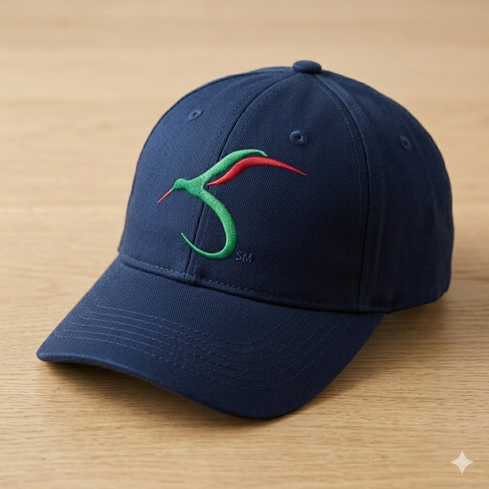

Describe the work
What would you like to improve, build, finish or repair?

WATER SOLUTIONS · CONSTRUCTION · PROPERTY MANAGEMENT
Water solutions, construction and property management — plumbing for homeowners, remodeling and home improvements, and care for the places that matter to you.
WHAT WE DO
From plumbing and water solutions to remodeling, construction and property management — one standard throughout.

JAMTRAC BRAND CONCEPT JAMTRAC MASCOT
JAMTRAC MASCOTA NAME. A STANDARD.
The Doctor Bird and the JAMTRAC wordmark give our company its unmistakable identity.
From a dripping tap to a new addition, every job gets the same care and attention.
Explore the galleryTHE JAMTRAC IDENTITY
Three more of our brand pictures — a welcome, an introduction, and the bird over the city at sunset.
 View gallery
View gallery Welcome hummingbird with the Jamaican flag
 View gallery
View gallery A green hummingbird in the jungle
A hummingbird over the city at sunset
START WITH THE RIGHT DETAILS
What would you like to improve, build, finish or repair?
Think about location, timing, access and photographs.
Send your draft to the JAMTRAC Screening Office by email, or download a copy to keep.